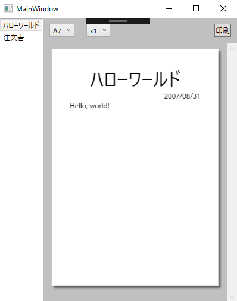
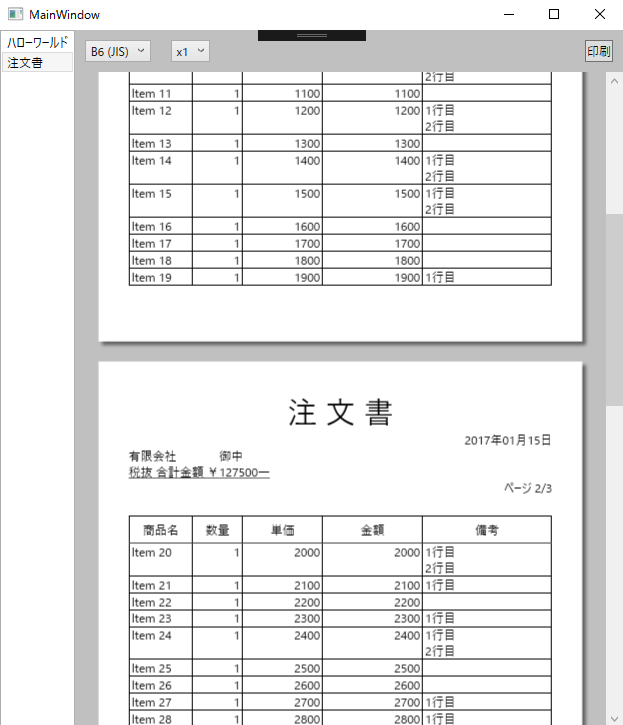

※これは XAML Advent Calendar 2016 の25日目の記事です。
WPF/XAML を使って帳票のデザインから印刷までやってみたという話です。ソースコードが GitHub にありますので、それと同様にやればできます。
vain0x/VainZero.WpfReportPrinting: WPFで帳票を作成するサンプル
要約
- XAML というマークアップ言語で帳票のデザインから印刷までできれば、たくさんの利点がある。
- WPF アプリケーションで帳票のプレビューや印刷を行うサンプルを作った。
- ページネーションが大変だったけどなんとかなった。
前提知識
XAML、WPF について簡単に説明します。
XAML とは、GUIアプリケーションの外観を記述するマークアップ言語です。WEB 系の人には「HTML+CSS みたいなもの」といえばイメージしやすいのではないでしょうか。
WPF とは、XAML と .NET 言語 (C# など) を用いて、Windows PC 用のネイティヴ アプリケーションを作るためのフレームワークです。XAML は WPF 以外でも使いますが、筆者は WPF しかやったことがないので、ひとまず本稿のターゲットは WPF のみとします。
利点
WPF/XAML で帳票を作ることにはいくつかの利点があります。
- 無料
- WPFは Visual Studio (無料) をインストールすれば無料で使えます。商用利用する場合は、Visual Studio の有償ライセンスを購入することで、やはりWPFは無料で使えます。
- 学習コストの削減
- 本稿と先述のソースコードをご覧いただければ、みなさんはWPFの知識だけで帳票のデザインから印刷まで行えるようになります。すなわち、帳票フレームワークに習熟するコストを省略できるわけです。
- 特に、帳票フレームワーク固有のデザイナーではなく、Visual Studio の高機能なXAMLデザイナーを利用して、プレビューを見ながらデザインを行える、というのも大きな利点です。これについては、参考リンクのブログ記事が詳しいです。
- プレビューの容易さ
- 詳しくは後述しますが、帳票をXAMLで作ることで、プレビューはほぼ完璧にできます。プレビュー機能もWPFで簡単に実装でき、メインのアプリケーションとシームレスに繋がります。
- ビューモデルの流用
- 帳票として印刷するデータ (GUIオブジェクト) の背景となるデータ構造として、WPFアプリケーションにあるものをそのまま使えることがあります。例えば、ユーザーが画面上の入力フォームにデータを記入し、それと等価な帳票を印刷する、といった場合です。
- XAML本来の利点――拡張性、可変レイアウト、など
- XAMLの売りとして、あらゆる要素の外観を完全にカスタマイズできる、というのがあります。これは帳票の用途にも役立つでしょう。実際、今回のサンプルでもスタイル機能をふんだんに活用しています。
- ウィンドウサイズを意識することなくウィンドウをデザインできるのと同様に、用紙サイズを意識することなく帳票を作れます。
簡単な帳票
まずは簡単な帳票を例に挙げて、印刷する方法まで一通り解説します。簡単な帳票とは、タイトルがどーんとあって、日付が右寄せで、あとは本文という感じです。まずはプレビュー画面のスクリーンショットをご覧ください。

ビューモデルと XAML は次のようになっています。UI要素はプレビュー用と印刷用の2つ (以上) をインスタンス化する必要があるので、 DataTemplate の形で定義しています。
// 印刷するページに対応するビューモデル。
// データをXAML側に埋め込んでしまったので中身がない。
public sealed class HelloWorldPageViewModel
{
}
<!--
上記のビューモデルの表示方法を定義するテンプレート。
Window.Resources プロパティの下に配置する。
-->
<DataTemplate DataType="{x:Type local:HelloWorldPageViewModel}">
<Grid Margin="30">
<StackPanel>
<TextBlock HorizontalAlignment="Center" FontSize="30" Text="ハローワールド" />
<TextBlock HorizontalAlignment="Right" Text="2007/08/31" />
<TextBlock Text="Hello, world!" />
</StackPanel>
</Grid>
</DataTemplate>
プレビュー
帳票のデザインが終わったので、次はプレビューです。
プレビューは、簡単にいえば、上に書いた XAML を「紙っぽいパネル」に載せるだけです。紙っぽさの演出についてはソースコードを参照してください。
ここで重要なのは紙のサイズ (A4 とか) です。というのも、ページネーションや文章の折り返しなどが用紙サイズに依存してしまうため、プレビュー時点で用紙サイズを決定しておくのが無難です。(もちろんプレビューをしないというのも1つの手です。)
用紙サイズ (mm 単位) から要素のサイズを換算するには、dpi を知る必要がありますが、ここで嬉しいお知らせがあります。後述するように、印刷時にはUI要素を FixedDocument というクラスの子孫要素に配置するのですが、FixedDocument の中身は 96dpi で固定されます。すなわち、FixedDocument の中身 (印刷するデータ) を 96dpi 決め打ちで作成しておけば、その FixedDocument を 600dpi のレーザープリンターに送信しても、同じ見栄えのものが印刷されるようになっています。 (参考: WPF のドキュメント)
要するに、印刷するデータは 96dpi で作ればよいわけです。
例えば A4 (縦) は、ISO 規格で 210mm×297mm と決まっており、1 inch = 25.40 mm 、1 inch = 96 pixel で換算すれば 793.70×1122.52 となります。このサイズで作った紙っぽいパネルにページの中身を配置すれば、実際に印刷されるのと同じ見栄えのプレビューを表示できます。
次は印刷です。
プリンターの選択
どのプリンターで印刷するかは、ユーザーに選択させる方法と、プログラム側で指定する方法の2通りがあります。
ユーザーに選択させる場合は、 System.Windows.Controls 名前空間の PrintDialog クラスを使います。(参考: PrintDialog クラス (System.Windows.Controls))
なお、プレビュー画面で選択された用紙サイズを印刷ダイアログの初期設定値にする方法は 時間が足りず調べられていません 読者の演習課題とします。
using System.Windows.Controls;
{
var printDialog = new PrintDialog();
var result = printDialog.ShowDialog();
if (!result.HasValue || !result.Value)
{
// 印刷ダイアログがキャンセルされた。
return;
}
// 後の工程で使用する。
var queue = printDialog.PrintQueue;
}
プログラム側で指定する場合は、プリントサーバーというのを使用するようです。詳しくは読者の演習課題とします。
ここでは、コンピューター自身を表すサーバー (localhost みたいなもの) である LocalPrintServer から、デフォルトのプリンターを指定する方法をとります。
// System.Printing を参照に追加する必要があります。
using System.Printing;
public void Print(Size pageSize)
{
var printServer = new LocalPrintServer();
// 既定のプリンターを表す PrintQueue を取得する。
var queue = printServer.DefaultPrintQueue;
// プレビュー画面で用紙サイズを選択させる場合は、用紙サイズを設定しておく。
var ticket = queue.PrintTicket;
ticket.PageMediaSize = new PageMediaSize(pageSize.Width, pageSize.Height);;
}
FixedDocument の生成
先述の通り、印刷するデータを持つ FixedDocument のインスタンスを用意します。この作業は再利用可能な形式にしてあります。
まず「印刷するデータを複数のページに分割する」機能 (ページネーション) を提供するインターフェイスを定義しておきます。IPaginatable と呼びましょう。
using System.Windows;
public interface IPaginatable
{
/// <summary>
/// ページのサイズを受け取って、オブジェクトのリストを返す。
/// リストに含まれる各オブジェクトは、それぞれ1つのページの中身を表す。
/// </summary>
IReadOnlyList<object> Paginate(Size pageSize);
}
いま例にとっているハローワールド帳票では、常に1つのページになりますので、Paginate メソッドは1つのオブジェクトを返せばよいわけです。次のようになります。 1
public sealed class HelloWorldReport
: IPaginatable
{
IReadOnlyList<object> Pages { get; } =
new object[]
{
new HelloWorldPageViewModel(),
};
public IReadOnlyList<object> Paginate(Size size)
{
return Pages;
}
}
あとは次の拡張メソッドを呼ぶだけです。
public static class PaginatableExtension
{
public static FixedDocument
ToFixedDocument(this IPaginatable paginatable, Size pageSize)
{
var document = new FixedDocument();
foreach (var content in paginatable.Paginate(pageSize))
{
var presenter =
new ContentPresenter()
{
Content = content,
Width = pageSize.Width,
Height = pageSize.Height,
};
var page =
new FixedPage()
{
Width = pageSize.Width,
Height = pageSize.Height,
};
page.Children.Add(presenter);
page.Measure(pageSize);
page.Arrange(new Rect(new Point(0, 0), pageSize));
page.UpdateLayout();
var pageContent = new PageContent() { Child = page };
document.Pages.Add(pageContent);
}
return document;
}
}
このメソッドは、Paginate メソッドが返したリストの各要素につき、それを固定サイズの ContentPresenter に入れて、それを FixedPage に入れて、それを PageContent に入れて、それを FixedDocument に入れる、という感じです。
こうして FixedDocument を手に入れました。
プリンターへの送信
最後に、この FixedDocument を、選択されたプリンターに送信すれば完了です。
// System.Printing の参照を追加する必要があります。
using System.Printing;
{
var writer = PrintQueue.CreateXpsDocumentWriter(queue);
writer.Write(document);
}
できました。
複雑な帳票
次に複数ページの帳票、すなわちページネーションの方法を解説します。
まずはプレビュー画面のスクリーンショットをごらんください。

XAML は結構な分量なので省略します。表の部分には、 スタイルをガチガチに決めた DataGrid HeaderedGrid という DataGrid のようなもの 2を使用しています。
簡単な帳票との差は、Paginate メソッドの実装だけです。
Paginate
ここでは実際にUI要素をインスタンス化することでページネーションを行います。(というか、それ以外にうまい方法があるのでしょうか。)
おおまかな手順は次の通りです。
- すべての行のデータを持った帳票を生成する。
- 帳票の中にある ScrollViewer を見つける。
- Visual Tree を辿ればよい。詳しくは参考リンクにあるブログ記事を参照。
- 「スクロールなしで見えている行の数」を数える。
- ScrollViewer.ViewportHeight が「スクロールなしで見える範囲の実際の高さ (ピクセル単位)」になっているので、各行の高さ (ActualHeight) の和がそれを超えない範囲を調べる。
- それらの行からなる帳票を生成する。これを1ページとする。
- 前のページに含まれる行を非表示にする。
- 次のページに表示すべき行だけが表示された状態になるので、繰り返し。
実際のソースコードはやや長いので、最初に張ったリンクから見てもらえればと思います。帳票の定義は Demo プロジェクトの Reports/OrderForm.cs の中にあります。ページネーションは、 Core プロジェクトの Windows/Documents/ISingleHeaderedGridPage.cs にあります。
サンプルプログラムの概略
必殺「ソースコードをごらんください」を思ったより使ってしまったので、サンプルプログラムの概略について説明します。
念のためリンクを再掲します: vain0x/VainZero.WpfReportPrinting: WPFで帳票を作成するサンプル
ソリューション構成
ソリューションは VainZero.WpfReportPrinting.Core と VainZero.WpfReportPrinting.Demo の2つのプロジェクトからなります。
前者 (.Core) は再利用可能な部品で、そのまま流用できるようになっています。中身は、先述の IPaginatable とその拡張メソッド、および VisualTree がらみの小さな拡張メソッドです。
後者 (.Demo) は、帳票のプレビューと印刷の機能を持つアプリケーションです。印刷時のオプションは多数ありますので、これをベースにして、必要によりカスタマイズしながら作るのがよいと思います。
使い方
まず使い方から説明します。
.Demo アプリを実行すると、ウィンドウが1つ表示されます。まずは左側のペインにあるリストボックスで、プレビューする帳票の種類を選びます。種類というのは、本稿で挙げた「簡単な帳票」(ハローワールド)と「複雑な帳票」(注文書)の2つです。
右側ペインの上部には、コンボボックスと印刷ボタンがあります。左端のコンボボックスでは、紙のサイズを指定します。紙のサイズが変わるたびにページネーションが再計算されるのがミソです。
右側ペインの残りの部分はプレビューです。
印刷ボタンを押すと、デフォルトのプリンターで印刷されます。(印刷ダイアログは表示されません。)
実装
メインウィンドウ (MainWindow.xaml) の中身は、1つの SampleReportPreviewer クラス (を DataTemplate で表示したもの) であり、これは先述の通り「左側ペイン」(帳票セレクター/Reports.ReportSelector)と「右側ペイン」(プレビューアー/Previewing.Previewer)からなります。
ReportSelector は本当にただの ListBox ですが、2つ注意するところがあります。
1点は、ReactiveProperty というクラスです。これは平たくいえば次のようなクラスです (※実際の定義ではありません)。
public class ReactiveProperty<T>
: INotifyPropertyChanged
{
public event PropertyChangedEventHandler PropertyChanged;
private T _value;
public T Value
{
get { return _value; }
set
{
_value = value;
PropertyChanged?.Invoke(this, new PropertyChangedEventArgs(nameof(Value)));
}
}
}
値をこれでラップしておくことで、 INotifyPropertyChanged の実装をいちいち手書きする (あるいは継承する) 必要がなくなる、という寸法ですね。
もう1点は、リストボックスの各要素の型である IReport です。注釈にも書きましたが、これは IPaginatable に1つのプロパティを加えただけのインターフェイスです。そのプロパティ (ReportName) というのは、単にリストボックスの各項目に表示するための名前(文字列)です。そのため、IPaginatable と同じだと思ってかまいません。
さて、プレビューアーにあるコンボボックスも同様のことに気をつければ問題ないはずです。
Previewer のコンストラクターにある この式 は、Rx を知らないと読み解けないかもしれません。
Pages =
Report.CombineLatest(
MediaSizeSelector.SelectedSize,
(r, pageSize) => r.Paginate(pageSize)
)
.ToReadOnlyReactiveProperty();
これは平たくいえば「Report, MediaSizeSelector.SelectedSize の最新の値を r, pageSize とするとき、 r.Paginate(pageSize) の結果を Pages の値とする」という意味です。もう少し手続き的にいえば、まず Report と ``MediaSizeSelector.SelectedSizeの値をとってきて、Paginate` します。加えて、そのどちらかのプロパティが変更されるたび (リストボックスやコンボボックスの選択要素が変わるたび)、ページネーションを再試行します。
最後に印刷ボタンですが、これは押されたとき、Previewer.PrintCommand→Previewer.Print を経由して Printer.Print まで行き、そこからは前半で述べた感じです。FixedDocument を作って、デフォルトのプリンターを取得して、ページサイズを指定して、印刷。
おわりに
いかがでしたでしょうか。不明点などあればコメントないし イシュー をお願いします。